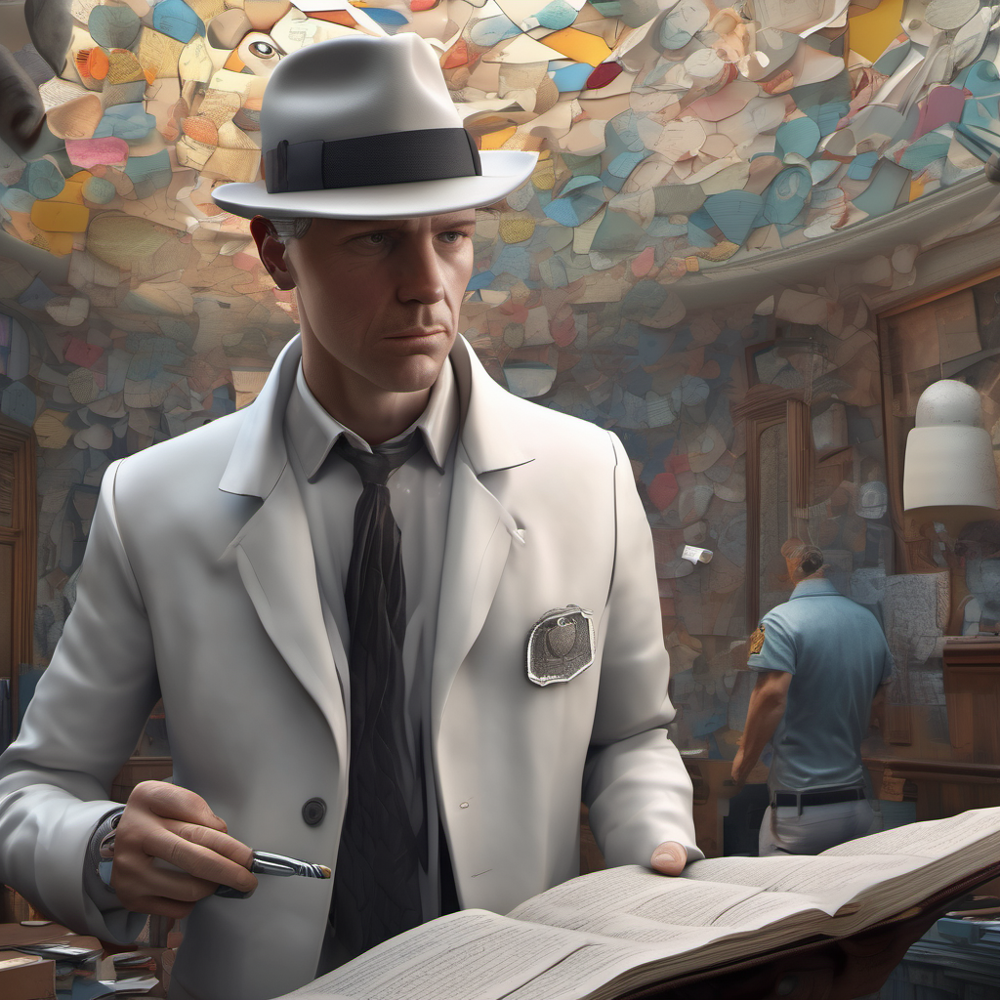
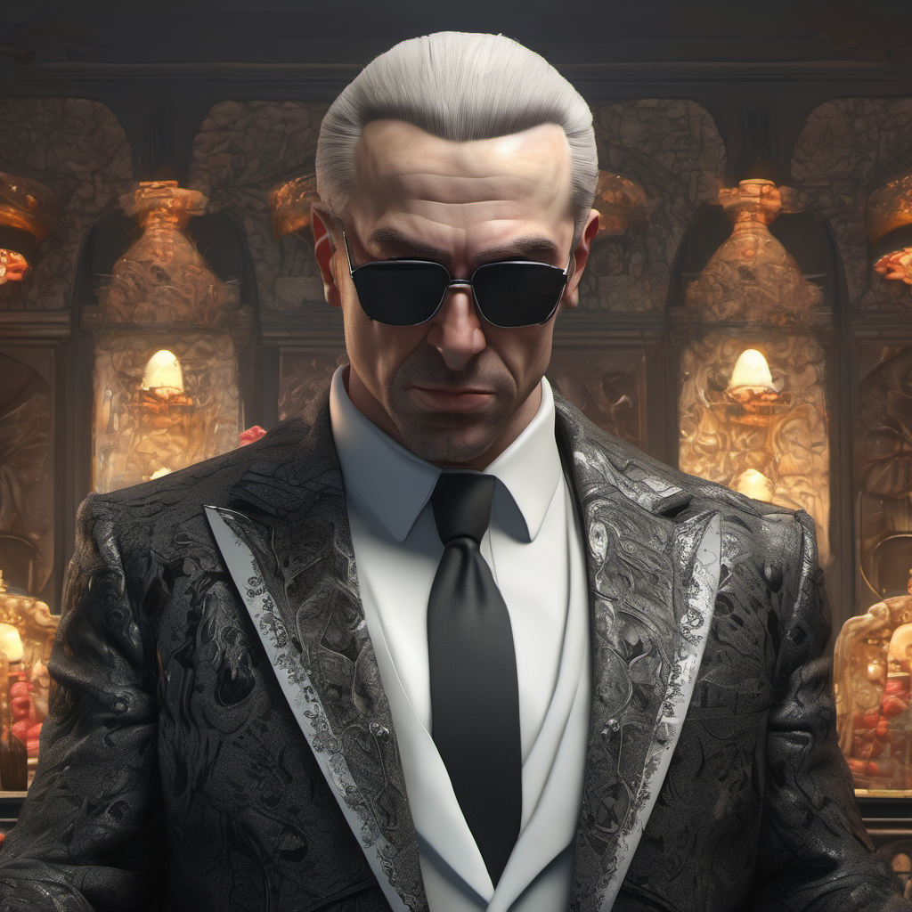
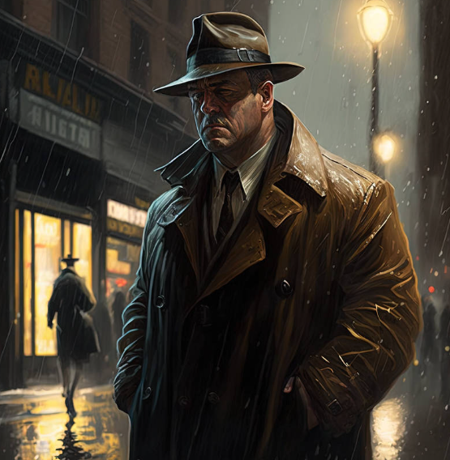

Detective Johnathan Black:

Detective Johnathan Black is a complex character, molded by years of experience navigating the murky waters of crime and corruption. At his core, Black is a man driven by a deep sense of justice, fueled by an unwavering commitment to seeking truth in a world shrouded in shadows.
Physically, Black cuts an imposing figure — a towering presence with a chiseled jawline and piercing eyes that miss nothing. His demeanor exudes confidence and authority, commanding respect from colleagues and adversaries alike. Despite his imposing stature, there is a weariness etched into the lines of his face — a testament to the countless battles fought and scars earned in the pursuit of justice.
Beneath the hardened exterior lies a keen intellect and razor-sharp wit. Black is a master of deduction, capable of piecing together fragmented clues to unravel even the most intricate of mysteries. His mind is a well-honed weapon, honed by years of honing his craft in the relentless pursuit of truth.
Despite his dedication to his work, Black is not without flaws. He carries the weight of past failures and missed opportunities, haunted by the ghosts of cases left unsolved. Beneath the facade of stoicism lies a vulnerability—a lingering doubt that gnaws at the edges of his consciousness, driving him to push harder and dig deeper in his quest for redemption.
Yet, amidst the darkness that surrounds him, there is a flicker of humanity—a sense of empathy that binds him to the victims he seeks to avenge. Black's compassion is a rare trait in a world tainted by greed and corruption, serving as a guiding light in the darkest of times.
In the face of adversity, Black remains steadfast—a beacon of hope in a world teetering on the brink of despair. His unwavering resolve is a testament to the resilience of the human spirit, proving that even in the darkest of nights, there is always a glimmer of light waiting to be found. He prefers sweets things as he believes it sharpens his mind.
Dr. Amelia Grant:
Dr. Amelia Grant is a figure of intellectual prowess and unwavering passion, her presence commanding attention in any room she enters. As an esteemed archaeologist, she possesses a rare blend of scholarly expertise and adventurous spirit, dedicated to uncovering the secrets of the past hidden beneath layers of time.
Physically, Dr. Grant is a striking figure—a woman of grace and elegance, with an air of confidence that belies her humble beginnings. Her features are etched with the marks of countless expeditions, her eyes alight with the fire of discovery. There is a magnetic quality to her presence, drawing others to her with an infectious enthusiasm for her work.
Beneath the surface lies a fierce determination—a relentless drive to push the boundaries of knowledge and challenge the conventions of her field. Dr. Grant is unafraid to venture into the unknown, her thirst for adventure matched only by her insatiable curiosity.
Yet, for all her accomplishments, Dr. Grant remains humble and approachable—a beacon of inspiration to those who share her passion for the past. She is a mentor and a friend, always willing to lend a guiding hand to those in need.
Despite the dangers that accompany her chosen profession, Dr. Grant approaches each expedition with a sense of optimism and excitement. She thrives on the thrill of discovery, driven by the belief that every artifact unearthed holds the key to unlocking a piece of history's puzzle.
But beneath the surface lies a vulnerability—a lingering fear that she may never uncover the answers she seeks. Dr. Grant's passion is tempered by the weight of responsibility, knowing that with each discovery comes the burden of preserving the past for future generations.
Dr. Amelia Grant is more than a mere archaeologist—she is a guardian of history, a seeker of truth, and a symbol of hope in a world filled with uncertainty. Her legacy will endure long after she is gone, a testament to the enduring power of knowledge and the indomitable spirit of those who dare to seek it.
Elijah Sinclair:

Elijah Sinclair is a figure shrouded in mystery and intrigue, his presence commanding attention with an aura of wealth and power that surrounds him like a cloak. As a reclusive billionaire with a penchant for the finer things in life, he exudes an air of sophistication and refinement that sets him apart from the crowd.
Physically, Sinclair is a striking figure—a man of tall stature and commanding presence, with sharp features and piercing eyes that seem to see straight through to the soul. His demeanor is cool and calculated, betraying little of the thoughts and emotions that churn beneath the surface.
Beneath the polished exterior lies a cunning intellect and ruthless ambition. Sinclair is a master manipulator, adept at pulling the strings from behind the scenes to achieve his desired ends. He plays the game of power with a skill honed by years of experience, navigating the treacherous waters of high society with ease.
Yet, for all his wealth and influence, Sinclair remains an enigma—a man of contradictions whose true motives are shrouded in secrecy. He surrounds himself with an air of mystery, revealing only what he wishes others to see while keeping his true intentions hidden from prying eyes.
Despite his aloof demeanor, Sinclair possesses a magnetic charm that draws others to him like moths to a flame. He is a master of persuasion, able to bend others to his will with a single word or a well-placed smile.
But beneath the facade of wealth and power lies a darkness—a cold, calculating heart that stops at nothing to achieve its goals. Sinclair is a man driven by an insatiable appetite for control, willing to sacrifice anything and anyone who stands in his way.
Elijah Sinclair is a figure of both fascination and fear—a symbol of the seductive allure of power and the dangers that lurk beneath its surface. His legacy will be remembered not for his wealth or influence, but for the trail of destruction left in his wake as he climbed to the pinnacle of success.
Samuel Boris:
A charismatic figure with a penchant for manipulation and deceit. As Black peels back the layers of Boris's carefully crafted facade, he uncovers a web of corruption that stretches back decades, intertwining with Sinclair's criminal enterprise in ways he never imagined.
Michael Mares:
A silver-tongued opportunist whose thirst for power knows no bounds. Beneath Mares's polished exterior lies a heart as black as night, his allegiance to Sinclair's legacy unwavering in the face of mounting scrutiny. But as Black digs deeper, he realizes that Mares's ties to Sinclair run deeper than anyone could have anticipated, threatening to expose secrets that could shake the very foundations of the city.
Alan Korben:
A cunning strategist with a gift for manipulation. As Black delves into Korben's past, he uncovers a trail of deception and betrayal that leads straight to Sinclair's doorstep. But as he closes in on his quarry, Black realizes that Korben is not the puppet master he appears to be, but merely a pawn in a much larger game—one orchestrated by forces far more sinister than he could have ever imagined.
Detective Maximillian Rogers:

A figure shrouded in charisma and ambition, his sharp wit and commanding presence making him a force to be reckoned with in the halls of law enforcement. With a chiseled jawline and piercing gaze, Rogers exudes an air of confidence that commands respect from his peers and strikes fear into the hearts of his enemies.
At first glance, Rogers embodies the very essence of a dedicated lawman—a tireless advocate for justice with an unyielding commitment to upholding the law. His impeccable record and countless accolades speak to his prowess as a detective, earning him the admiration and loyalty of those around him.
But beneath the surface lies a darkness—a hunger for power and influence that threatens to consume him whole. As Rogers's ambition grows, so too does his willingness to bend the rules, using his position of authority as a shield to protect his own interests and further his own agenda.
Driven by a sense of entitlement and a belief in his own superiority, Rogers sees himself as untouchable—a king among men, answerable to no one but himself. His once noble intentions are overshadowed by greed and a thirst for power, leading him down a dangerous path from which there may be no return.
With each step, Rogers's descent into darkness becomes more pronounced, his once unwavering sense of justice eroded by the corrupting influence of his own ambition. No longer content to merely enforce the law, he becomes the law—an arbiter of his own brand of justice, willing to do whatever it takes to get what he wants.
As Detective Jonathan Black confronts his former ally in a battle for the soul of the city, he realizes that Rogers is no longer the man he once knew. He has become something darker, something more dangerous—a wolf in sheep's clothing, using his influence to cover his tracks and silence anyone who dares to stand in his way.
In the end, Rogers's downfall is of his own making—a cautionary tale of the dangers of unchecked ambition and the corrupting influence of power. Though his name may be tarnished and his legacy forever marred by greed, his story serves as a reminder that even the brightest stars can be consumed by the shadows if they stray too far from the light.